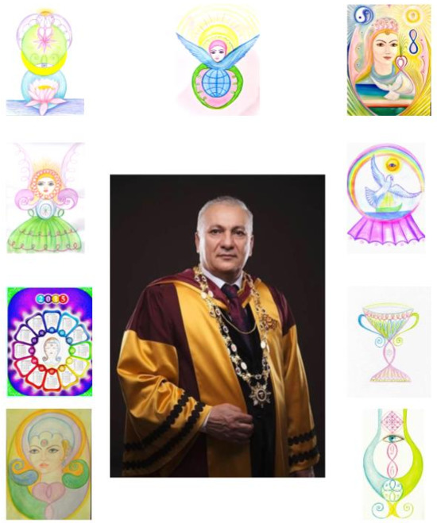

ПРИГЛАШЕНИЕ К УЧАСТИЮ В ХII ВСЕМИРНОМ ИНТЕРАКТИВНОМ СЕАНСЕ КОРРЕКЦИИ ПО ФАЗОВОМУ ПОРТРЕТУ «МАТЕРИНСТВО»
Дорогие друзья!
31.12.2021 в 18:00 по московскому времени научный руководитель Международной Школы Альтернативной психологии профессор, доктор медико-биологических наук, академик Оксфордского университета Ибадов Яшар Садай оглы проведёт интерактивный сеанс коррекции по Фазовому портрету «Материнство» с целью помощи материнским энергиям и информациям на уровне матрицы. Участие в таком сеансе – уникальная возможность накануне Нового года привести в порядок себя и свои дела, «вписать» в будущее мечты и закономерные пожелания. Год за годом, участвуя в новогодних сеансах, люди получают прекрасные результаты: улучшение здоровья, решение сложных жизненных ситуаций, раскрытие творческого потенциала, укрепление веры и ощущения полноты жизни. Сеансы стали для нас доброй традицией!
Фазовый портрет «Материнство», созданный доктором Яшаром Ибадовым в 2009 году, работает как Матрица Преображения Материи. Именно в обновлении Материи, в решении экологических проблем остро нуждается сейчас человечество и планета в целом!
Уходящий 2021 год равно как и 2020 стал необычным годом для всех людей на Земле.
Covid-19 нанес серьезный удар по здоровью людей во всех странах мира. Но также он выявил необходимость объединения всех жителей планеты для решения задач, поставленных перед Человечеством самим Временем: экология сознания, экология природы, экология отношений. Более рельефно обозначилась проблема личной ответственности каждого человека за происходящее в мире.
Фазовый портрет «Материнство», созданный доктором Яшаром Ибадовым в 2009 году, является в том числе пособием для коррекции всех аспектов нашей планеты: биологических, ноосферных, экологических, социальных. В процессе коррекции по Фп «Материнство» весь мир получает позитивное и гармоничное воздействие. По результатам сеанса 31.12.2019 года был получен ФП 2020 года. По этому Фазовому портрету с мая месяца 2020 года и по сегодняшний день сотрудники международной школы АП под руководством академика Яшара Ибадова регулярно проводят коррекцию с целью завершения пандемии.
Ваше участие в интерактивном сеансе 31 декабря станет конкретным вкладом в общее дело, в наше счастливое, здоровое будущее. Пусть совместная работа в преддверии нового года сделает всех более жизнелюбивыми и жизнестойкими.
Полная информация о методике работы с ФП «Материнство» представлена на сайте yashel.org.
По всем организационным вопросам обращаться к Росликовой Елене Владимировне.
Roslikova@gmail.com
8-927-255-22-03

